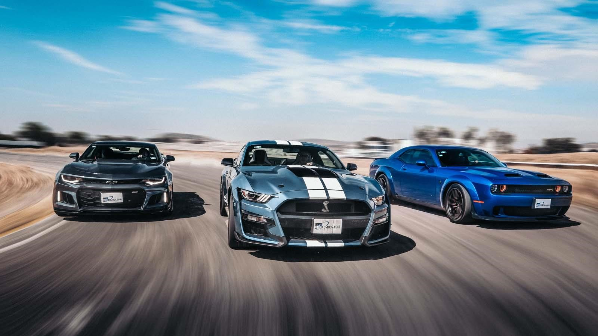
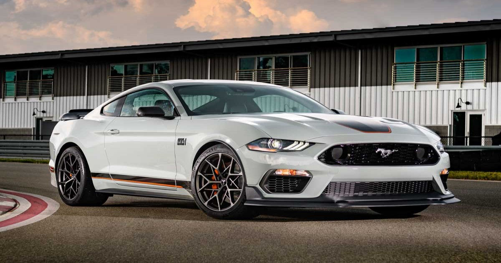
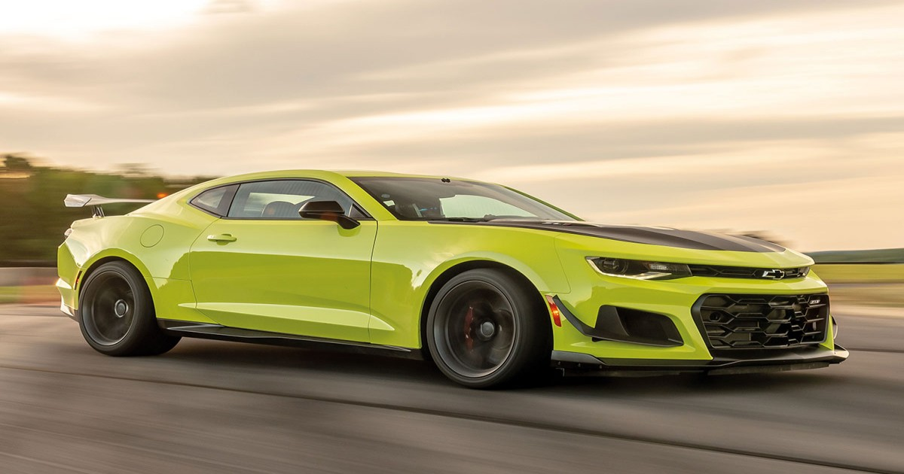
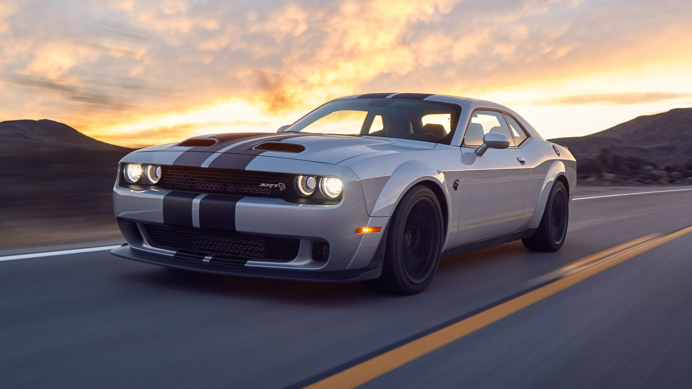

Hola fierrero! Llegaste a la página correcta. Acá te vas a enterar de todas noticias del mundo automotor. Nacionales,importados,autos de carreras; todo lo que querés saber sobre los fierros en un solo lugar
Artículos
Lo último de lo ultimo en el mundo de los autos
Los modelos que reemplazarán a los vehículos actuales del TC

Los tres grandes muscle para el 2024
La temporada 2024 del TC viene con cambios importantes dejando a los historicos de Ford Falcon, Chevrolet Chevy SS y Dodge GTX atras. Asi lo confirmo el presidente de la ACTC y ha mostrado los nuevos vehículos en los que competiran los corredores durante el proximo año. Desde el país de las barras y las estrellas vienen los tres grandes:
Ford Mustang Mach 1

Chevrolet Camaro ZL1

Dodge Challenger

Estas tres bestias se incorporarán a la máxima categoría de nuestro país resultando una incognita el legendario Torino, un infaltable de la categoría. Cabe resaltar que se rumorea que se esta trabajando sobre un nuevo modelo del Toro adaptado al diseño de las nuevas épocas. Apenas tengamos una imagen del prototipo le vamos a dedicar un artículo entero, mientras tanto tenemos para ir soñando con la aparición de las leyendas norteamericanas al TC, como asi tambien muchisimos cambios que se vienen para el próximo periodo en absolutamente todas las categorías mayores del ACTC.